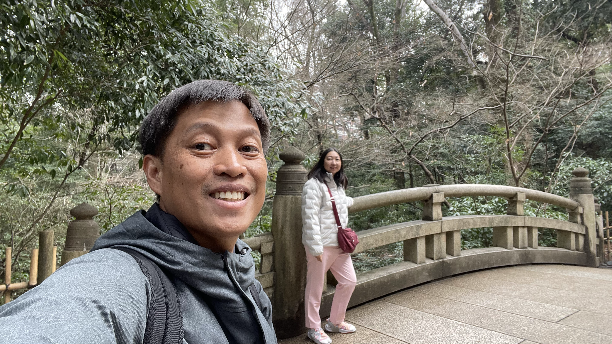

ระบบห้องประชุม สถาปัตยกรรมระบบคอมพิวเตอร์ เครือข่าย ทำงานด้านความมั่นคงปลอดภัยไซเบอร์มีใบรับรองระดับสากล
วิสัยทัศน์ แผนงานพัฒนา และเส้นทางการทำงาน
มุ่งมั่นทำผลงานเพื่อปรับระดับเข้าสู่ตำแหน่ง "นักวิชาการคอมพิวเตอร์ชำนาญการ" โดยปัจจุบันผ่านการประเมิน IDP ระดับต้นเรียบร้อยแล้ว และกำลังจัดทำผลงานตามแผน IDP ระดับกลางอย่างต่อเนื่อง เพื่อพัฒนางานไอทีของหน่วยงานให้มีประสิทธิภาพยิ่งขึ้น
ปลดภาระหนี้บ้านสหกรณ์ มช. ให้หมด เพื่อสร้างความมั่นคงให้ครอบครัว ควบคู่กับการพัฒนาระบบโครงสร้างพื้นฐานและเครือข่ายของกองบริหารงานกลางให้เสถียร ปลอดภัย และสนับสนุนการทำงานของทุกคนได้อย่างเต็มที่
ติดตั้งและนำระบบ NAS มาใช้ในกองบริหารงานกลาง เพื่อช่วยแก้ปัญหาข้อจำกัดเรื่องพื้นที่จัดเก็บข้อมูลของ OneDrive ทำให้มีพื้นที่จัดเก็บไฟล์และเอกสารสำคัญอย่างปลอดภัยและเพียงพอ
พัฒนาระบบแดชบอร์ดบริหารจัดการทรัพย์สินไอทีของกองฯ ช่วยให้สามารถตรวจสอบจำนวน ติดตามสถานะอุปกรณ์ และวางแผนการซ่อมบำรุงได้อย่างเป็นระบบ
ร่วมกับคุณอนุญาชัย และคุณณัฐพงษ์ ในการปรับเปลี่ยนกระบวนการรับ-ส่งหนังสือและพัสดุจากระบบกระดาษมาสู่ระบบดิจิทัล โดยใช้แท็บเล็ตในการลงระบบ ถ่ายภาพเป็นหลักฐาน และลงลายมือชื่อ เพื่อความสะดวกรวดเร็วและตรวจสอบได้ (ปัจจุบันยังไม่มีอุปกรณ์ Tablet หากเป็นไปได้อยากขอความอนุเคราะห์สนับสนุนอุปกรณ์ Tablet เก่า เพื่อนำมาใช้ในโครงการ)
สำเร็จการศึกษาทั้งปริญญาตรีและปริญญาโท สาขาวิชาวิศวกรรมคอมพิวเตอร์ มหาวิทยาลัยเชียงใหม่ มีความถนัดและรับผิดชอบหลักในงานด้าน IT Infrastructure, ระบบเครือข่าย และความมั่นคงปลอดภัยสารสนเทศ
เริ่มต้นทำงานที่สถาบันวิจัยสังคม ซึ่งเป็นหน่วยงานขนาดเล็ก จึงได้รับมอบหมายให้ดูแลงานไอทีทุกรูปแบบอย่างครบวงจร และเคยผ่านการปรับเปลี่ยนสายงานมาหลายบทบาท (นักเทคโนโลยีสารสนเทศ ➔ พนักงานปฏิบัติงาน ➔ นักจัดการงานทั่วไป) ทำให้ได้เรียนรู้ทั้งงานเอกสาร ธุรการ และระบบการทำงานขององค์กรอย่างเข้าใจ
เมื่อได้ย้ายมาสังกัดกองบริหารงานกลาง สำนักงานมหาวิทยาลัย ได้รับโอกาสที่ดีจาก ผอ.พิบูลย์ ในการเปลี่ยนสายงานกลับมาสู่ตำแหน่ง "นักวิชาการคอมพิวเตอร์" ตามสาขาวิชาชีพที่จบมา จึงตั้งใจนำความรู้และประสบการณ์ทั้งหมด มาช่วยพัฒนาระบบงานของกองบริหารงานกลางให้เกิดประโยชน์สูงสุด
คลิกที่ป้ายการรับรองด้านล่างเพื่อแสดงภาพใบประกาศนียบัตรตัวจริง (Popup)

การันตีทักษะด้านความมั่นคงปลอดภัยสากล การจัดการความเสี่ยง และการป้องกันภัยคุกคามไซเบอร์ระดับองค์กร

รับรองความรู้พื้นฐานและมาตรฐานด้าน Cybersecurity ที่ได้รับการยอมรับในอุตสาหกรรมเทคโนโลยีทั่วโลก
กระบวนการทำงานมาตรฐาน (Standard Operating Procedures) ของนักวิชาการคอมพิวเตอร์ กองบริหารงานกลาง
มุ่งเน้นความพร้อมสูงสุดของระบบภาพ เสียง แสงสว่าง และระบบ Video Conference สำหรับการประชุมระดับผู้บริหารและส่วนกลาง (เช่น ห้องประชุมบัวเรศ คำทอง)
รับข้อมูลการจองห้องประชุม วัตถุประสงค์ จำนวนผู้เข้าร่วม และรูปแบบการประชุม (On-site / Hybrid / Video Conference)
Phase: Requestเข้าเตรียมห้องล่วงหน้า 30-60 นาที ทดสอบไมโครโฟน เครื่องขยายเสียง โปรเจกเตอร์ จอภาพ สัญญาณอินเทอร์เน็ต และระบบ Zoom / Teams
Phase: Inspectionประจำการควบคุมระบบภาพ-เสียงตลอดการประชุม สลับสัญญาณภาพ นำเสนอเอกสาร และแก้ไขปัญหาทางเทคนิคเฉพาะหน้าทันที
Phase: Live Operationปิดอุปกรณ์ตามลำดับขั้นตอน (Shutdown Sequence) บันทึกและตรวจเช็คสภาพความพร้อมของอุปกรณ์เพื่อเตรียมพร้อมสำหรับการประชุมรอบถัดไป
Phase: Closureให้บริการตรวจเช็ค ซ่อมแซม อัปเกรดเครื่องคอมพิวเตอร์และอุปกรณ์ต่อพ่วง ให้พร้อมใช้งานและทำงานได้อย่างมีเสถียรภาพ
รับเรื่องร้องเรียนหรือคำขอซ่อมบำรุง วินิจฉัยอาการเบื้องต้นผ่านโทรศัพท์หรือการลงพื้นที่ตรวจเช็คสภาพเครื่อง
Phase: Intakeดำเนินการสำรองไฟล์และข้อมูลสำคัญของผู้ใช้งานก่อนลงมือซ่อมบำรุง เพื่อป้องกันความเสี่ยงข้อมูลสูญหาย 100%
Phase: Protectionแก้ไขฮาร์ดแวร์ เปลี่ยนอะไหล่ เป่าฝุ่นทำความสะอาด จัดการระบบปฏิบัติการ ไดรเวอร์ และปรับแต่ง Custom Spec ให้เหมาะสมกับลักษณะงาน
Phase: Resolutionติดตั้งโปรแกรมป้องกันไวรัส อัปเดต Security Patch ตรวจสอบความปลอดภัยตามมาตรฐาน และทดสอบการใช้งานร่วมกับผู้ใช้
Phase: Deliveryดูแลสถาปัตยกรรม Server, Network, On-Premise NAS และความมั่นคงปลอดภัยสารสนเทศของกองบริหารงานกลาง
ตรวจสอบสถานะความพร้อมของ Network Switch, Access Point และ Server แม่ข่ายให้พร้อมให้บริการตลอด 24 ชั่วโมง
Phase: Monitoringบริหารจัดการพื้นที่เก็บข้อมูลส่วนกลาง NAS เชื่อมโยงสิทธิ์การเข้าถึง และแก้ปัญหาข้อจำกัดของ OneDrive สำหรับไฟล์ขนาดใหญ่
Phase: Storage & Dataตรวจสอบ Log ผิดปกติ ป้องกันภัยคุกคามตามกรอบมาตรฐานใบรับรองสากล CompTIA Security+ และ ISC2 Certified in Cybersecurity
Phase: Defenseอัปเดตสถิติการใช้งาน สถานะของทรัพย์สินด้านไอที เพื่อการวางแผนจัดซื้อ ซ่อมบำรุง และบริหารจัดการอย่างมีประสิทธิภาพ
Phase: Trackingเปลี่ยนผ่านกระบวนการรับ-ส่งหนังสือและพัสดุทางอากาศยานจากการใช้กระดาษสู่ระบบดิจิทัล (Paperless) ร่วมกับคุณอนุญาชัย และคุณณัฐพงษ์
งานสารบรรณจำแนกเอกสารและพัสดุที่ต้องนำส่งด่วนทางเครื่องบินตามลำดับความสำคัญและเส้นทางการส่ง
Phase: Sortingบันทึกข้อมูลเข้าระบบ ถ่ายภาพพัสดุและเอกสารเป็นหลักฐานดิจิทัล แทนการจดบันทึกลงสมุดคุมแบบกระดาษ
Phase: Digital Entryเจ้าหน้าที่ Messenger นำส่งสิ่งของถึงหน่วยงานเป้าหมายอย่างแม่นยำ พร้อมระบบติดตามสถานะการนำส่ง
Phase: Dispatchผู้รับตรวจเช็คพัสดุและเซ็นรับผ่านหน้าจอ Tablet ระบบยืนยันการรับสำเร็จแบบ Real-time ตรวจสอบย้อนหลังได้ 100%
Phase: Verified Completionกรอบการดำเนินงานตามมาตรฐานสากล เพื่อความเป็นเลิศในการสนับสนุนภารกิจของกองบริหารงานกลาง มหาวิทยาลัยเชียงใหม่
รับเรื่อง จำแนกประเภท และบันทึกคำขอรับบริการผ่านช่องทางมาตรฐานของหน่วยงาน
Stage 1วิเคราะห์หาสาเหตุ ประเมินผลกระทบ และวางแผนมาตรการป้องกันความเสี่ยงด้านข้อมูล
Stage 2ลงมือแก้ไขปัญหาตามขั้นตอนมาตรฐาน (SOP) ด้วยความชำนาญและรวดเร็ว
Stage 3ทดสอบการใช้งานร่วมกับผู้รับบริการ และตรวจสอบความปลอดภัยตามมาตรฐานไซเบอร์
Stage 4ปิดงาน บันทึกสินทรัพย์ และนำข้อมูลมาวิเคราะห์เพื่อพัฒนานวัตกรรมอย่างต่อเนื่อง
Stage 5